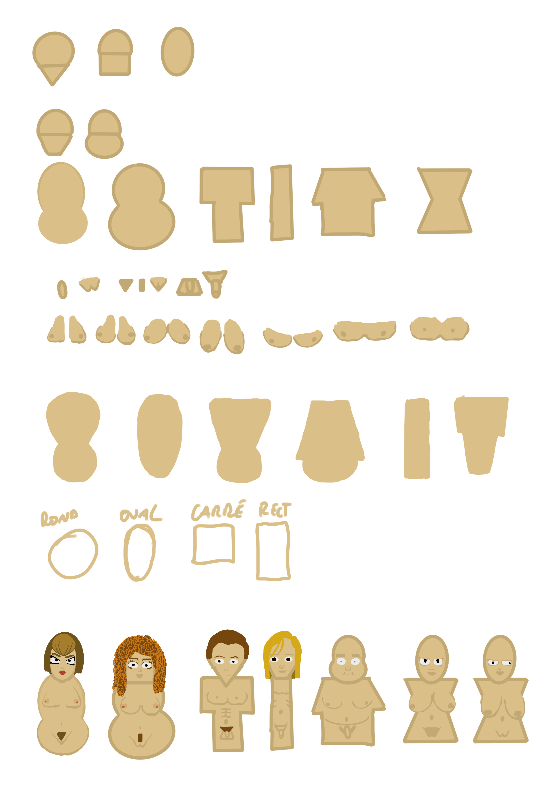

Petite échelle
À observer : les longueurs restent ancrées à la tête. Elles ne contournent pas automatiquement les épaules ou le buste. Constats et comparaisons.
LA BIBLIOTHÈQUE
18 silhouettes capillaires
Chaque carte reprend les réglages courants.
Touchez une coiffure pour l’examiner.
Les références
Les trois modèles R1 restent inchangés. Neuf modèles complètent le catalogue V1 ; six explorations étendent les longueurs, volumes et asymétries. La validation artistique de P4 reste à faire.
Catalogue capillaire V1 · 12 modèles

Planche originale des habitants
